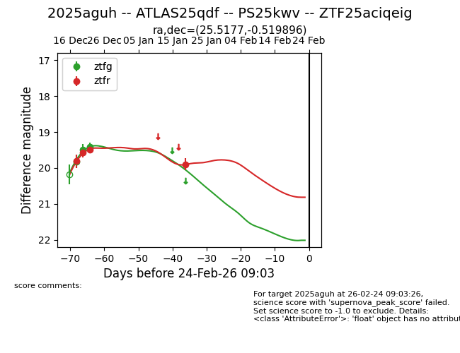
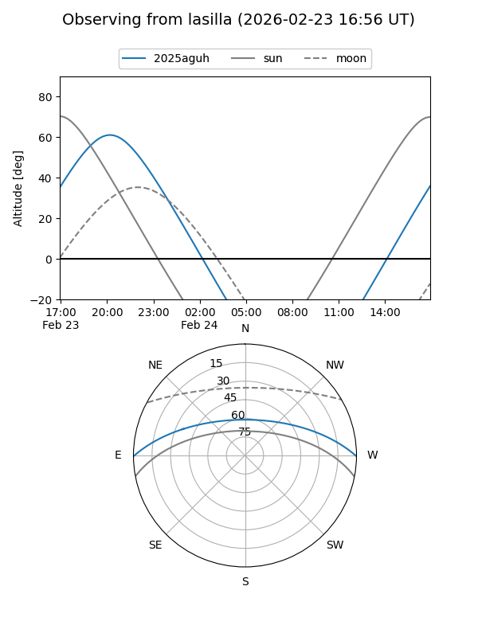
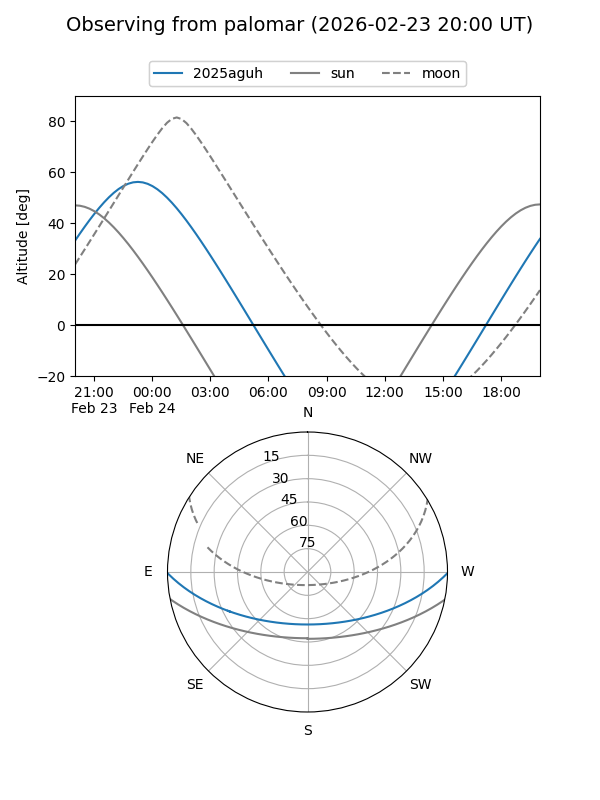

2025aguh
Target 2025aguh at 2025-12-31 17:00
Aliases and brokers:
FINK:
Lasair:
ALeRCE:
TNS:
YSE:
alt names
ZTF25aciqeig (ztf,fink_ztf)
2025aguh (tns,yse)
ATLAS25qdf (atlas)
PS25kwv (panstarrs)
Coordinates:
equatorial (ra, dec) = 25.5177,-0.51990
equatorial (HMS+DMS) = 01:42:04.25,-00:31:11.63
galactic (l, b) = (149.5727,-60.74557)
Flags:
Photometry:
last ztfg=19.41, ztfr=19.49
3 ztfg, 3 ztfr detections
Lightcurve

Visibility


Additional plots